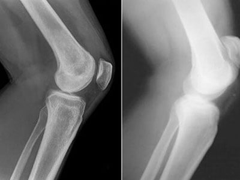

Saat persendian menghambat aktivitas normal kita, kita hanya bisa mengharapkan keajaiban!" - Wawancara eksklusif dengan seorang profesor legendaris yang berhasil menciptakan keajaiban!
Tamu kita hari ini adalah seorang inovator legendaris dari Jakarta - Dr Wahyu Prasetyo, Dr. Wahyu pernah terlibat dalam pengembangan sarana inovatif tentang penyakit sendi dan berpengalaman di bidang kesehatan selama belasan tahun.
Dr Wahyu: Halo semua, saya Dr Wahyu. Saya lahir, menempuh pendidikan dan bekerja di Jakarta. Saya bekerja sebagai ahli ortopedi hingga tahun 2009.
Pewawancara: Apakah ada hal buruk yang terjadi di tahun 2009, hingga akhirnya Anda berhenti bekerja sebagai ahli ortopedi?
Dr Wahyu: Di tahun 2007, istri saya Wulan didiagnosis menderita osteoarthritis lutut. Harus saya akui, masa-masa itu terasa sangat berat dan merupakan titik balik dalam kehidupan saya. Kami mencoba segalanya selama 2 tahun untuk menyembuhkan istri saya: fisioterapi, berhenti melakukan latihan yang berat, mengonsumsi berbagai macam vitamin dan suplemen makanan (kondroitin, glukosamin, MSM dan lain sebagainya), gel, salep. Tapi semuanya sia-sia. Tidak ada yang berhasil dan kami benar-benar putus asa. Saya merasa frustasi dan kecewa, apalagi jika mengingat bahwa saya sendiri adalah seorang dokter tapi saya malah tidak bisa melakukan apa-apa untuk membantu menyembuhkan istri saya. Waktu itu saya berpikir, apakah benar-benar tidak ada cara lain untuk menyembuhkan orang yang saya cintai? Kemudian saya mulai melakukan penelitian.
Pewawancara: Penelitian seperti apa yang Anda lakukan? Bisakah Anda menjelaskannya lebih rinci?
Dr Wahyu: Saat Anda melihat sendiri bagaimana istri Anda tidak akan bisa berjalan normal untuk beberapa tahun ke depan, Anda pasti akan melakukan segala sesuatu untuk mencegah hal itu terjadi. Sama halnya dengan saya, saya tidak bisa berdiam diri saja dan pasrah. Akhirnya saya pun mulai mencoba melakukan penelitian. Saya mempelajari semua materi tentang penyakit persendian, baik secara langsung maupun tidak langsung. Saya harus mempelajari fisiologi, psikosomik, dan biokimia. Semua uang saya hampir habis untuk mencari tahu semua rahasia dalam bidang ini dari para spesialis terbaik di Asia, yang pastinya telah memahami masalah persendian yang parah sekalipun dengan jauh lebih baik daripada saya.
Pesan cepat dengan harga diskon ke 21.08.2021
Pewawancara: Pada Desember 2009, saya akhirnya mengetahui bahwa dengan perpaduan bahan tertentu, Anda bisa mendapatkan suplemen yang mampu menghilangkan rasa sakit pada persendian untuk selama-lamanya.
Dr Wahyu: Tapi sayangnya: bahan khusus ini tidak ada di Indonesia. Jadi saya harus meminjam sejumlah uang dan memesannya dari berbagai negara di Asia. Bahan yang saya pesan akhirnya tiba sebulan kemudian, tapi masih ada masalah lainnya - tidak ada tenaga ahli laboratorium yang bersedia membantu penelitian saya. Untungnya, teman-teman lama saya bersedia. Akhirnya, 4 bulan kemudian saya berhasil menemukan formula yang tepat dan Wulan pun mulai mencobanya.
Puji Tuhan! Hasilnya melebihi ekspektasi saya!
Pewawancara: Apa yang terjadi? Bagaimana hasilnya?
Dr Wahyu: Kondisi Wulan jauh membaik setiap harinya. Setelah 7 hari, Wulan mulai bisa pergi sendiri ke supermarket dan membeli beberapa makanan. Dan senyumnya, yang sangat saya rindukan, kembali muncul menghiasi wajahnya. Setelah 2 minggu, arthritisnya hilang total! Kedengarannya memang mustahil untuk menjadi kenyataan, tapi hasil uji lab menunjukkan bahwa Wulan sudah sehat total. Sudah 7 bulan berlalu dan Wulan tetap sehat, tidak ada tanda-tanda munculnya arthritis. Saya sangat senang!
Pewawancara: Anda sungguh hebat dan teladan bagi kita semua! Tapi Anda tidak diam saja dengan hasil yang memuaskan ini, bukan?
Dr Wahyu: Iya, tapi tidak langsung saat itu juga. Awalnya kami menikmati hidup dan menghargai setiap waktu yang kami habiskan bersama. Tidak lama kemudian, Wulan melahirkan putri kami yang cantik. Dia sangat bersyukur telah terbebas dari masalah persendian, terlebih karena kondisi kehamilan juga merupakan beban besar pada persendian.
Pada suatu malam, Wulan bertanya kepada saya apakah banyak orang di luar sana yang juga mengalami sakit persendian. Kemudian kami melihat statistik yang ada dan ternyata cukup banyak orang yang mengalami masalah yang sama. Lebih dari 1 juta orang di Indonesia terkena berbagai macam penyakit persendian. Kemudian Wulan menanyakan sebuah pertanyaan yang mengubah hidup saya selamanya: Bisakah kita membantu orang lain dengan menyembuhkan mereka? Membuat mereka kembali bahagia? Dan pertanyaannya ini semakin membuat saya jatuh cinta lagi padanya. Dia adalah hal terbaik yang pernah terjadi dalam fase kehidupan saya. Dan saya setuju dengan idenya. Butuh waktu sekitar 3 tahun untuk membuat dan menyempurnakan formula Biotrin - yang terbaik yang sangat terjangkau untuk masyarakat kita.
Pewawancara: Kedengarannya sangat luar biasa. Tolong jelaskan lebih rinci tentang Biotrin.
Dr Wahyu: Wulan dan saya melakukan sesuatu yang tidak pernah dilakukan orang lain sebelumnya. Biotrin adalah suplemen revolusioner yang berbahan dasar alami.
Komposisi alami Biotrin mengandung ekstrak holothuroidea atau teripang yang terkenal di dunia medis dan telah terbukti menyembuhkan luka seperti luka bakar atau menghilangkan bekas luka, mengatasi gatal pada kulit, tekanan darah tinggi, jerawat, asam urat, bisul, masalah sendi dan tulang tumor, kista , kanker, stroke, kesehatan hati, kesehatan jantung, dll. Teripang adalah analgesik 3 kali lebih kuat dari paracetamol (obat anti rasa sakit dan anti panas). Secara bersamaan, ekstrak holothuroidea memiliki efek yang sangat positif untuk meredakan nyeri sendi dan tulang.
Sayangnya ekstrak holothuroidea ini tidak dijual di Indonesia, jadi kami harus membelinya dari berbagai negara di Asia.
Berkat formula uniknya, Biotrin dapat mengatasi berbagai penyakit persendian
- Gonarthrosis
- Meniscus injuries
- Osteoporosis
- Osteochondritis
- Osteochondrosis
- Osteoarthrosis
- Coxarthrosis
- Arthrosis
- Arthritis
Pesan cepat dengan harga diskon ke 21.08.2021
Biotrin - kemasan asli!
Klik di sini dan cari tahu cara memesan dengan diskon khusus >>>
Pewawancara: Apakah Biotrin sudah melewati tahapan uji klinis?
Dr Wahyu: Suplemen Biotrin telah melalui seluruh uji klinis dan mendapatkan sertifikat dari Food and Drug Administration (FDA), serta mendapatkan rekomendasi dan penilaian dari Komite para ahli spesialis.
Dikarenakan komposisi Biotrin terdiri dari bahan alami yang sama sekali tidak menimbulkan efek samping, para ahli menyarankan penderita nyeri sendi untuk mengonsumsi Biotrin.
Pewawancara: Luar biasa! Menurut saya pribadi, Anda benar-benar seorang inovator sejati. Bagaimana cara Anda melakukan semua ini?
Dr Wahyu: Semua memang membutuhkan perjuangan dan kerja keras selama bertahun-tahun. Tahun depan kami juga akan merayakan ulang tahun perkawinan kami yang ke-10. Hingga saat ini, berdasarkan data lapangan, 17.934 orang sudah mulai kembali menjalani kehidupan normal mereka dan melupakan rasa sakit persendian mereka untuk selama-lamanya.
Tujuan kami adalah untuk menyembuhkan orang lain sebanyak mungkin, bukan hanya untuk mendapatkan profit. Anda mungkin juga akan menyebut kami kuno.
Pewawancara: Biotrin tersedia di mana saja?
Dr Wahyu: Sayangnya Biotrin belum tersedia di apotek umum. Seringkali apotek hanya menjual produk-produk yang sudah terkenal dan produk baru yang independen sangat susah untuk masuk. Selain itu, apotek juga memiliki kecenderungan untuk menjual produk dengan harga yang tinggi. Bahkan terkadang obat-obatan dengan efek samping yang buruk pun tetap dijual dengan harga tinggi.
Kami menyediakan formulir pemesanan resmi, dimana Anda bisa memesan Biotrin yang asli.
Untuk memesan Biotrin, ikuti langkah-langkah berikut:
- 1. Isi formulir resmi di situs web.
- 2. Koordinator kemudian akan menghubungi Anda dan menentukan alamat pengiriman.
- 3. Dalam 2-5 hari (diperlukan pengiriman), kurir akan mengirimkan produk Biotrin.
Pewawancara: Apakah ada hal lain yang ingin Anda sampaikan kepada para pembaca kami?
Dr Wahyu: Saya dan Wulan memutuskan untuk memberikan diskon 50% untuk setiap pembelian Biotrin. Manfaatkan diskon ini sebelum tanggal 21.08.2021! Setelah tanggal tersebut, Biotrin akan kembali dijual dengan harga normal yang cukup terjangkau. Mari hidup sehat! Biotrin adalah produk terbaik yang bisa Anda dapatkan untuk menjaga persendian tetap sehat. Ingat, tanpa kesehatan, uang Anda tidak akan ada artinya.
Semoga beruntung!
Dengan memesan melalui situs website ini Anda akan mendapatkan produk asli yang telah diuji secara klinis dan terdaftar di FDA (TR 193326471). Anda dapat meyakini bahwa produk ini memiliki kualitas yang sangat tinggi.
21.08.2021 jumlah paket suplemen yang tersisa sesuai dengan program:
Pesan cepat dengan harga diskon ke 21.08.2021
Data Anda dikirim langsung ke pabrik. Tidak ada orang lain selain dia yang memiliki akses ke mereka.


Dan pesanan saya juga sampai dengan sangat cepat. 
Salam, Wahyu.

Diskonnya wow!
Konfirmasi pesenan gue juga cepet. Mereka langsung telpon balik cuman dalem sekian menit.
Bye bye radang sendi!
Salam, Wahyu.

Salam, Wahyu.


Awas produk palsu.
Salam, Wahyu.

Pewawancara: Selamat pagi, Dr Wahyu. Sebelumnya, mari kita buka sesi ini dengan memperkenalkan diri Anda secara singkat.